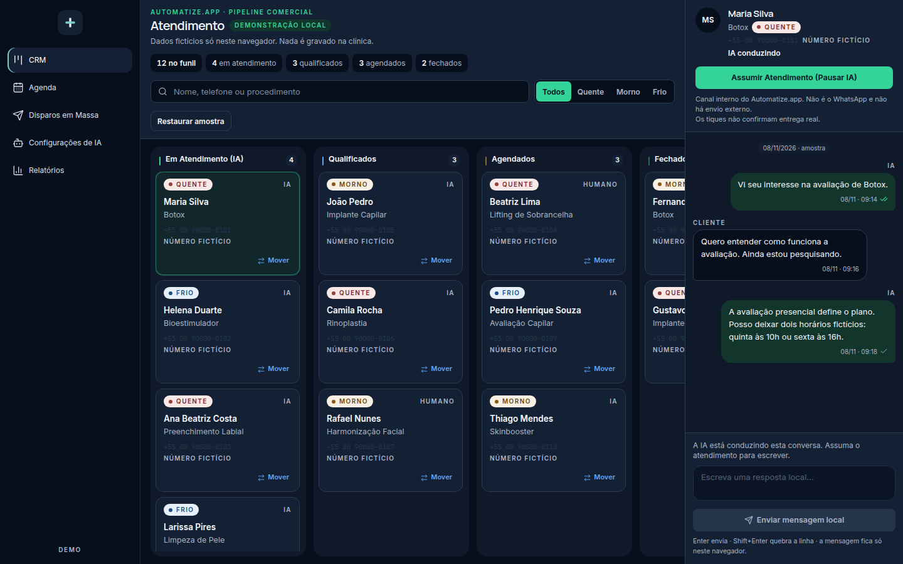
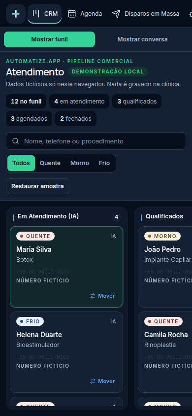

Onde o paciente se perde
O paciente quase nunca diz não. Ele só fica pelo caminho.
- Chega mensagem às 22h. Quando a recepção abre o WhatsApp, a paciente já marcou em outro lugar.
- A pessoa pede o valor, some, e ninguém teve tempo de chamar de novo.
- A consulta estava marcada. Faltou, e o horário ficou vazio.
- Instagram, WhatsApp e agenda em lugares diferentes. Dá trabalho saber quem está em que etapa.
- Pra saber como foi o dia, você precisa perguntar pra recepção.
Não é falta de esforço da equipe. É muita coisa chegando ao mesmo tempo.
Como funciona
Do primeiro oi à avaliação no Google
Seis momentos em que a clínica costuma perder paciente. Em cada um, a mensagem certa sai na hora certa, no tom da clínica. Toque em cada etapa.
- WhatsApp e Instagram no mesmo atendimento
- Agenda e lembrete sem a recepção digitar
- Retorno para quem perguntou e sumiu
- Avaliação no Google depois de cada consulta
Demonstração ilustrativa, com nomes e horários fictícios. Instagram e Google entram na implantação.
Para a recepção
A recepção continua no comando. Só que com o dia mais leve.

- Ninguém fica esquecido. Cada conversa aparece com a etapa e o próximo passo.
- Retorno e lembretes saem sozinhos. Ela não precisa lembrar de chamar ninguém.
- WhatsApp, Instagram e agenda na mesma tela. Sem pular de aba em aba.
- Quando a conversa pede um toque humano, ela assume na hora.
Ela para de correr atrás e passa a cuidar de quem está na frente dela.
Para quem comanda a clínica
Você vê a clínica inteira pelo celular. De onde estiver.

- Quem chegou hoje, quem marcou, quem confirmou e quem veio.
- Mais aproveitamento dos pacientes que já chegam até você, sem gastar mais com anúncio.
- Menos horário vazio, com lembrete e confirmação antes de cada consulta.
- Clareza total: de onde vem cada paciente e onde ele parou, sem planilha e sem precisar perguntar.
Uma conversa
Até áudio de paciente ela entende e responde
O paciente manda áudio, a resposta sai na hora e a avaliação fica marcada. Escolha a especialidade.
Resposta na hora
Sua clínica
online
Demonstração ilustrativa.
O aplicativo por dentro
Um sistema completo pra clínica, num painel simples
Toque num módulo pra ver a tela. Os dados da demonstração são fictícios.
Demonstração ilustrativa
Implantação em 7 dias
A nossa equipe coloca tudo pra rodar em 7 dias.
A clínica não precisa entender de tecnologia. A gente faz junto.
- Conversa inicialEntendemos os procedimentos, os horários e o jeito de falar da clínica.
- ConfiguraçãoLigamos WhatsApp, Instagram, agenda e Google. O atendimento aprende o tom da clínica.
- Treino da recepçãoUma chamada pra recepção usar o painel com segurança.
- No ar com acompanhamentoSeguimos perto depois da implantação, com suporte pelo WhatsApp e chamadas de ajuste.
Perguntas frequentes
A recepção vai ser substituída?
Não. A recepção continua no comando. O sistema tira dela o trabalho repetitivo, e ela assume sempre que a conversa pedir.
O paciente vai perceber que não é uma pessoa?
As mensagens saem no tom da clínica, curtas e educadas. Qualquer conversa pode passar pra recepção na hora.
Usa o número de WhatsApp que a clínica já tem?
Sim, a ideia é manter o número que os pacientes já conhecem. A gente vê o melhor caminho na implantação.
Funciona com a agenda que já usamos?
Pode usar a agenda do sistema ou a que a clínica já usa. Isso é definido na conversa inicial.
Preciso instalar algo ou entender de tecnologia?
Não. Funciona no navegador e no celular, e a nossa equipe faz a implantação.
Quanto custa?
Depende do tamanho da clínica e dos canais. A gente conversa sobre isso nos 15 minutos.
E os dados dos pacientes?
Ficam no painel da clínica, com acesso só pra quem a clínica autorizar.
15 minutos pra ver o painel por dentro
Eu mostro como fica o caminho do paciente na sua clínica e você decide com calma.
(11) 91322-1587 · no horário que for melhor pra você.